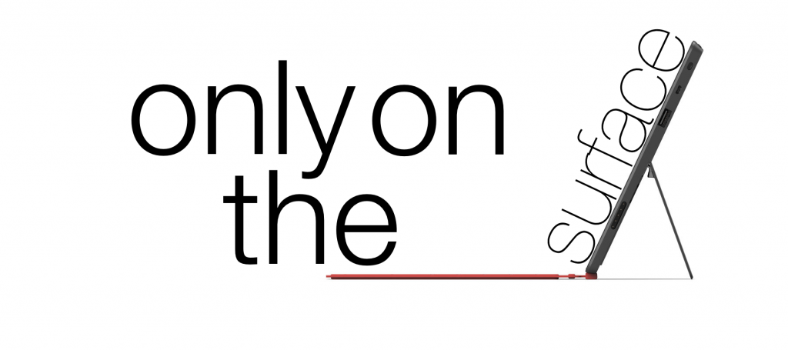
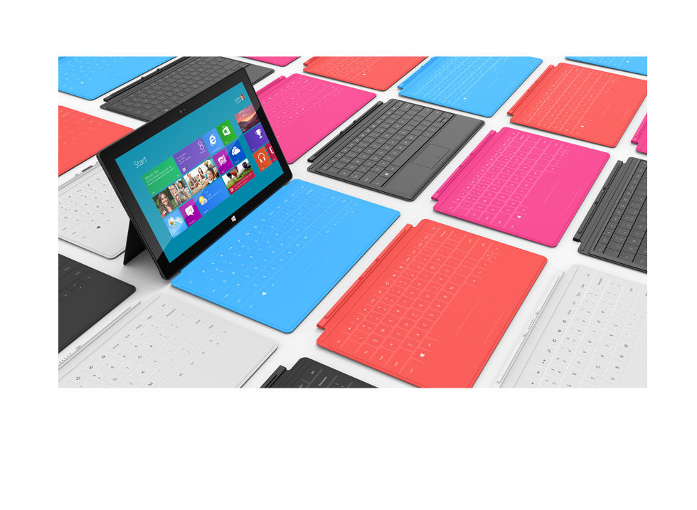

Only On The Surface
by T. Chapin on June 27, 2012 at 10:48 pmTech
For many reasons, this is going to be a rather short analysis. The first is that I don’t really feel the need to cover Windows 8 as we have been seeing that slip around over the course of almost the past year. That and that there isn’t a lot to cover. I just feel that beyond some small cool things, the Microsoft Surface hasn’t done a lot of things that are huge.
Thoughts
The keynote was pretty dull. I think they were going for a “we beat Apple” feel, but there are a lot of things that made me feel otherwise. The first of these is that while Balmer was on stage reading statistics, he wasn’t doing just that. He was also giving some weird emotional spiel that seemed poorly rehearsed. The video was decent. The issue is that Apple keynotes spew tremendous graphs and factoids about how much better they are doing than the competition, being keen to leave out any downfalls. Yet, Microsoft seemed to fail at really conveying the message that “we beat them.” Besides, Balmer has no charisma or stage presence. The other things that makes me feel that they failed to “beat Apple” is that every time I caught a glimpse of the audience, all I saw were journalists and reporters, etc. either looking up or down at glowing Apple logos. Oh, and the fact that the unacceptable happened: the product malfunctioned. Midway through the presentation, there was some sort of fumble and the Surface device became inoperable. I think the screen froze. Its a bit sad that that happened.
The Device
The device really is new “only on the Surface” for a bunch of reasons. While I do really like the new Windows logo and the cool dock/magnet connector for the even cooler and more ingenious keyboard/cover attachment, there was nothing that actually worked to make me think they are really pushing the envelope.
First to the good things, though. The keyboard that is supplied with the device is some brilliant combination of Apple’s own SmartCover and Zagg’s ZaggMate (yes there are tons of other devices like Zagg’s). It connects on the long side of the rather rectangular device with a magnetic/pin dock situation and serves to both flap over the screen and cover/protect it and to also flap out as a keyboard and trackpad. Brilliance. The device also has a built in kickstand. This is where I’m really not sure. It is a large enough device that if it broke it would be really annoying, but Redmond was really showing off the strength of the special “VaporMg” casing. HTC did the same with some of their smartphones, so I could see this ending up well or poorly. As always it’s really thin and has a high-def screen and blah blah blah (the screen is actually pretty nice, with an ‘HD’ display at 16:9 and 10.6”, nevertheless). All those things seem pretty normal to me for any contemporary tablet release. However, the addition of a USB port is really awesome. I am not entirely ready to dispense of man’s second best friend (the flashdrive). The SD slot seems a bit out dated. That seems to be the issue with a lot of Microsoft’s products and attitude as a whole. They can’t make anything truly new because they won’t dispense of things we think of needing right now, but probably wont use in five years. But if they do, then people complain because Windows machines are the standard and people don’t expect them to drop things just because they are old. However when Apple does this it’s “only to be expected, it’s Apple.” Rather much of an unfair double-standard they have to deal with. The cameras seem pretty average, just like a lot of the other hardware, if not on the upper-end.
Now to the (bad) mediocre. There isn’t anything about the device that seems inherently bad or stupid, but a lot of it just seems like the same-ol’ same-ol’. This might change when the device is actually released, but we shall see.
The Wrap
In the end, I think this is still a pretty spectacular device, simply because of Windows 8 RT and its low power capacities, though Windows 8 Pro is still awesome. If anyone wants a new tablet that works more as a hardcore computer then this seems like the definite choice, as there is nothing actually bad about the device, and, just like any new device, it will only be “cutting-edge” for so long.


{kind=link}
{kind=link}